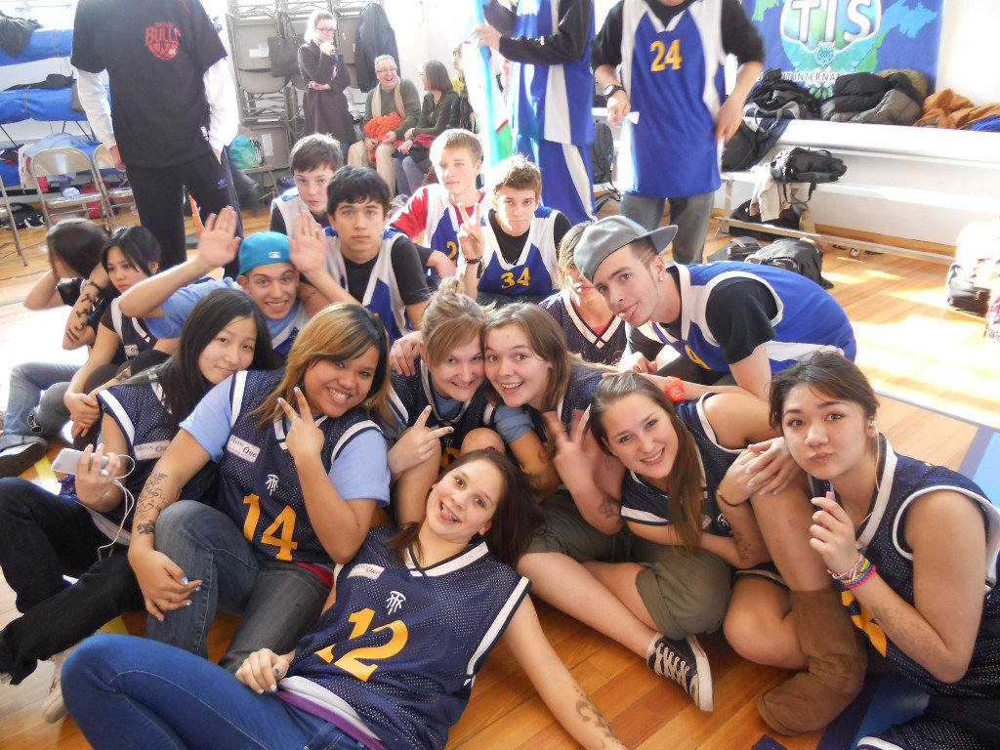
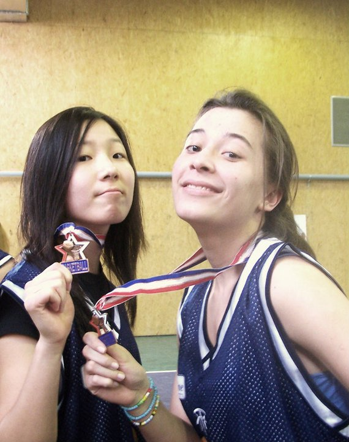
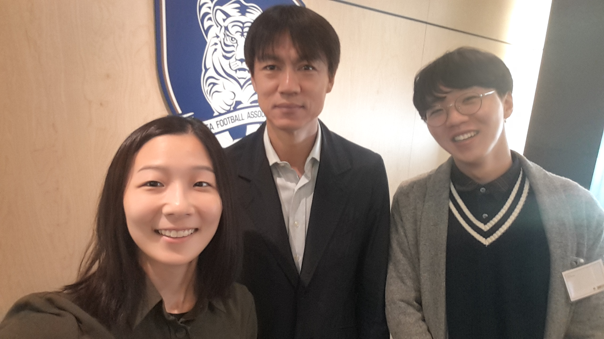

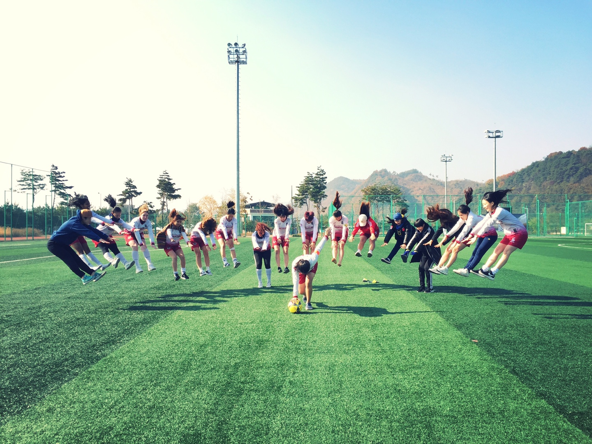
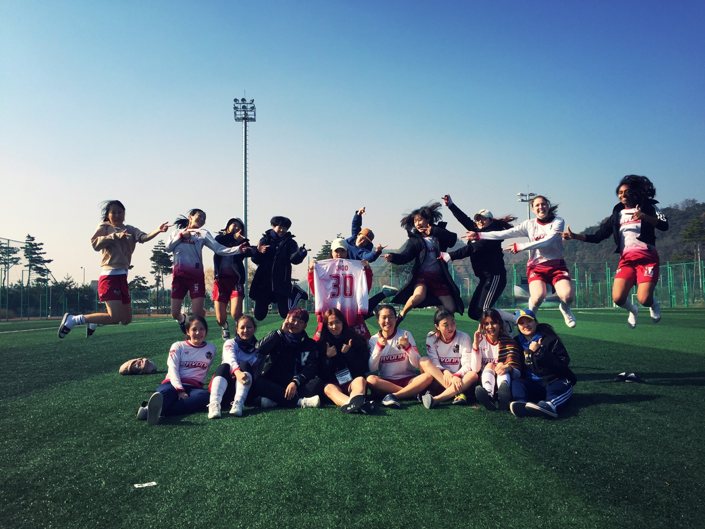
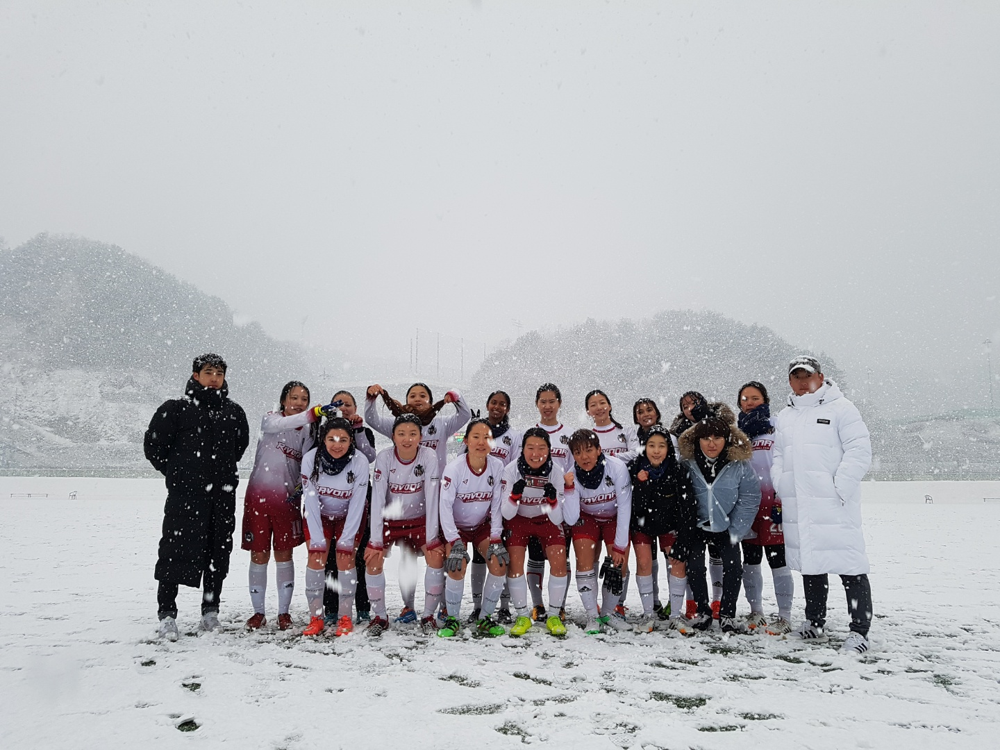
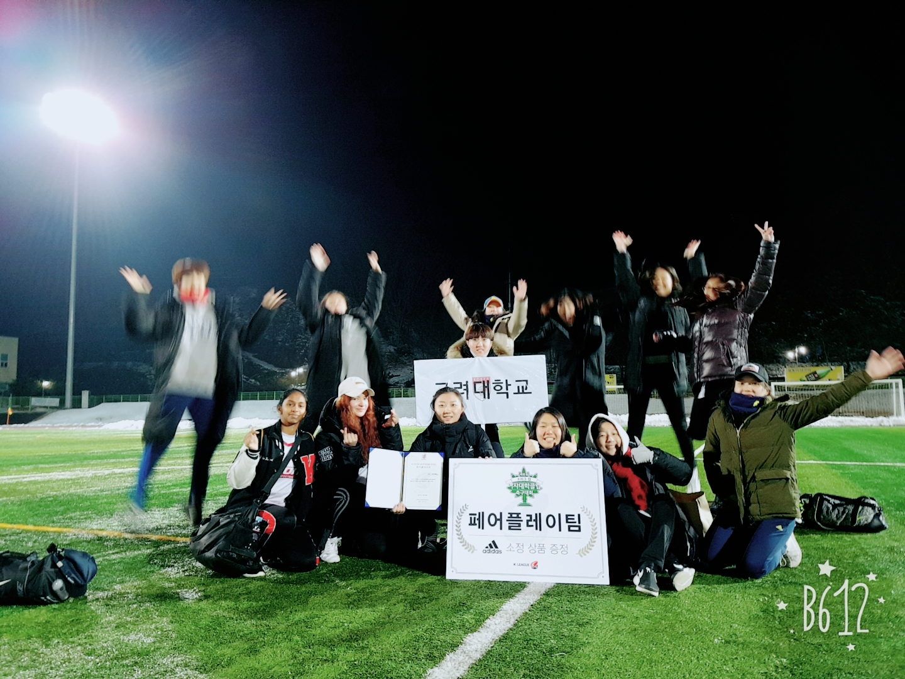
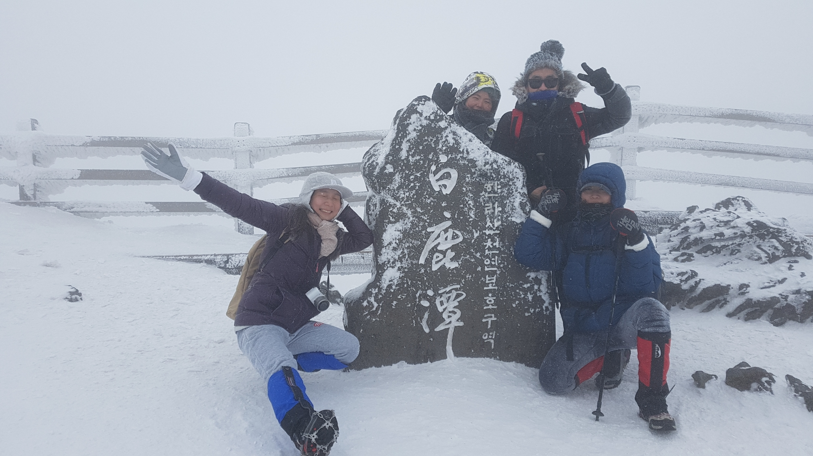
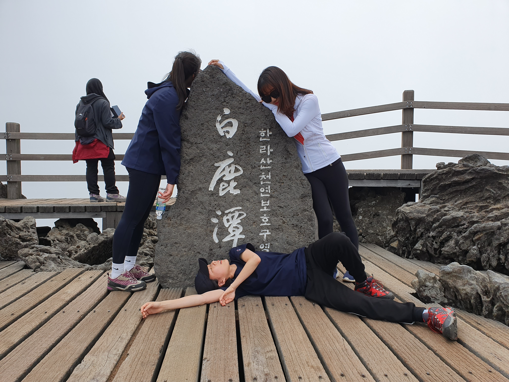
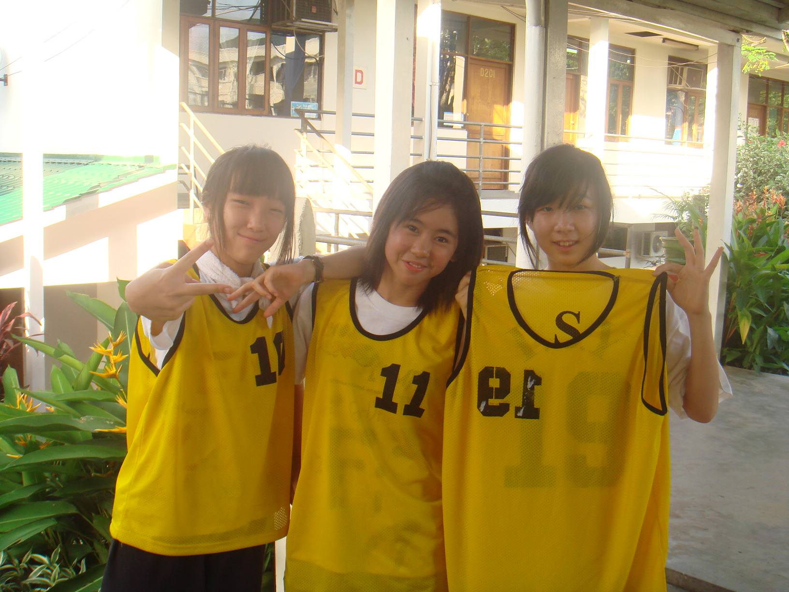
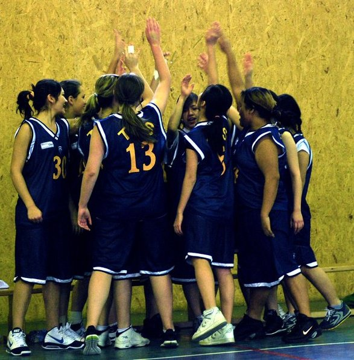
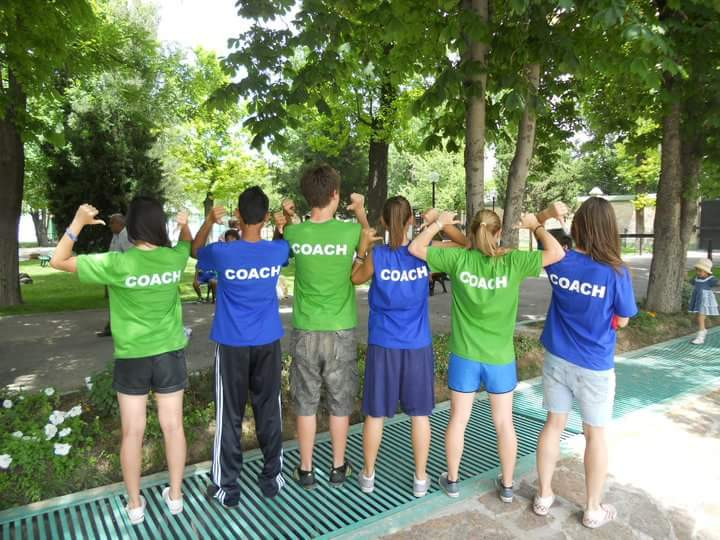
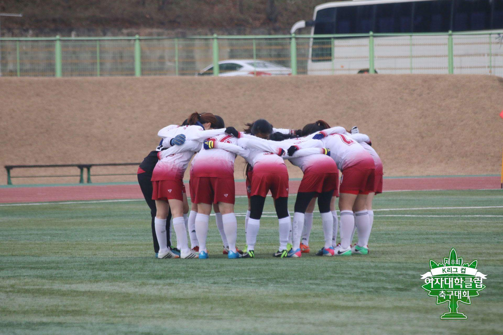
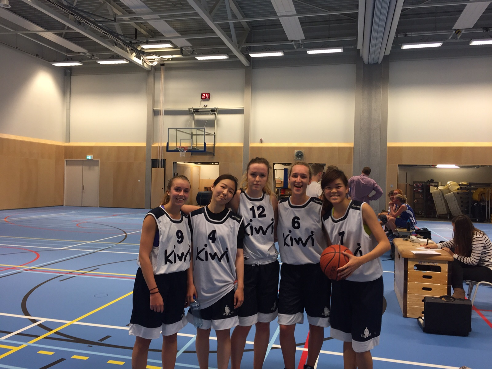
Hello, I’m yi-yujin.
I strive to become a designer who knows what to do with data, so that I can bring meaning-ful, or yiyu-ful experience to people.
—click on the words to learn more about me!